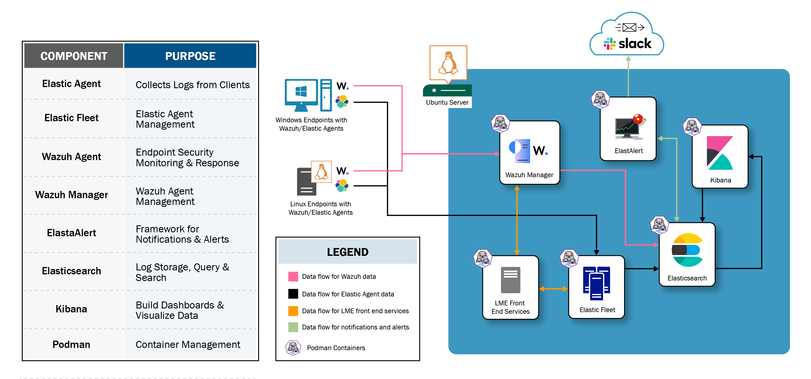

Architecture
LME runs on Ubuntu 22.04 and leverages Podman containers for security, performance, and scalability. We've integrated Wazuh, Elastic, and ElastAlert open source tools to provide log management, endpoint security monitoring, alerting, and data visualization capabilities. This modular, flexible architecture supports efficient log storage, search, and threat detection, and enables you to scale as your logging needs evolve.
Diagram
Containers
Containerization allows each component of LME to run independently, increasing system security, improving performance, and making troubleshooting easier.
LME uses Podman as its container engine because it is more secure (by default) against container escape attacks than other engines like Docker. It's far more debug and programmer friendly. We're making use of Podman's unique features, such as Quadlets (Podman's systemd integration) and User Namespacing, to increase system security and operational efficiency.
LME uses these containers:
- Setup: Runs
/config/setup/init-setup.shbased on the configuration of DNS defined in/config/setup/instances.yml. The script will create a certificate authority (CA), underlying certificates for each service, and initialize the admin accounts for Elasticsearch(user:elastic) and Kibana(user:kibana_system). - Elasticsearch: Runs LME's database and indexes all logs.
- Kibana: The front end for querying logs, visualizing data, and managing fleet agents.
- Elastic Fleet-Server: Executes an elastic agent in fleet-server mode. Coordinates elastic agents to gather client logs and status. Configuration is inspired by the elastic-container project.
- Wazuh-Manager: Allows LME to deploy and manage Wazuh agents.
- Wazuh (open source) gives EDR (Endpoint Detection Response) with security dashboards to cover the security of all of the machines.
- LME-Frontend (coming in a future release): Will host an API and GUI that unifies the architecture behind one interface.
Required Ports
Ports required are as follows:
- Elasticsearch: 9200
- Kibana: 443, 5601
- Wazuh: 1514, 1515, 1516, 55000, 514
- Agent: 8220
Note: For Kibana, 5601 is the default port. We've also set Kibana to listen on 443 as well.
Agents and Agent Management
LME leverages both Wazuh and Elastic agents providing more comprehensive logging and security monitoring across various log sources. The agents gather critical data from endpoints and send it back to the LME server for analysis, offering organizations deeper visibility into their security posture. We also make use of the Wazuh Manager and Elastic Fleet for agent orchestration and management.
- Wazuh Agents: Enables Endpoint Detection and Response (EDR) on client systems, providing advanced security features like intrusion detection and anomaly detection. For more information, see Wazuh's agent documentation.
- Wazuh Manager: Responsible for managing Wazuh Agents across endpoints, and overseeing agent registration, configuration, and data collection, providing centralized control for monitoring security events and analyzing data.
- Elastic Agents: Enhance log collection and management, allowing for greater control and customization in how data is collected and analyzed. Agents also feature a vast collection of integrations for many log types/applications. For more information, see Elastic's agent documentation.
- Elastic Fleet: Manages Elastic Agents across your infrastructure, providing centralized control over agent deployment, configuration, and monitoring. It simplifies the process of adding and managing agents on various endpoints. ElasticFleet also supports centralized updates and policy management.
Alerting
ElastAlert is an open-source alerting framework to automate alerting based on data stored in Elasticsearch. It monitors Elasticsearch for specific patterns, thresholds, or anomalies, and generates alerts when predefined conditions are met. This provides proactive detection of potential security incidents, enabling faster response and investigation. ElastAlert's flexible rule system allows for custom alerts tailored to your organization's security monitoring needs, making it a critical component of the LME alerting framework.
Log Storage and Search
As the core component for log search and storage, Elasticsearch indexes and stores logs and detections collected from Elastic and Wazuh Agents, allowing for fast, real-time querying of security events. Elasticsearch enables users to search and filter large datasets efficiently, providing a powerful backend for data analysis and visualization in Kibana. Its scalability and flexibility make it essential for handling the high-volume log data generated across different endpoints within LME's architecture.
Data Visualization and Querying
Kibana is the visualization and analytics interface in LME, providing users with tools to visualize and monitor log data stored in Elasticsearch. It enables the creation of custom dashboards and visualizations, allowing users to easily track security events, detect anomalies, and analyze trends. Kibana's intuitive interface supports real-time insights into the security posture of an organization, making it an essential tool for data-driven decision-making in LME's centralized logging and security monitoring framework.